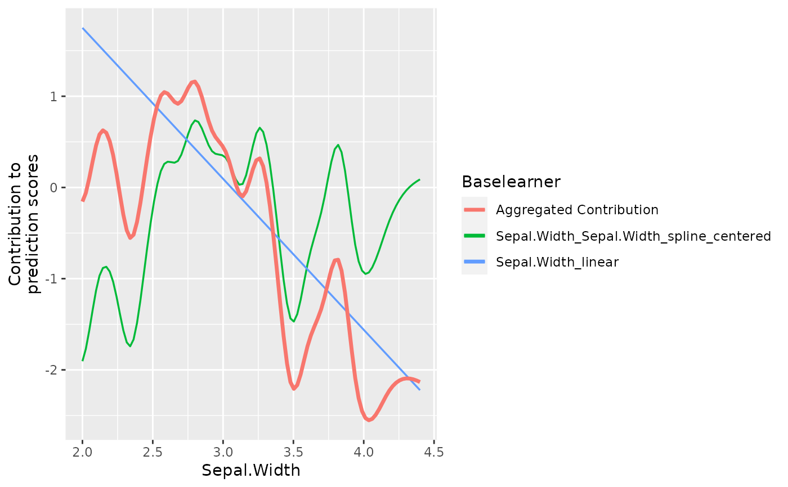

plotPEUni.RdThis function visualizes the contribution of a specific feature to the overall
prediction score. If multiple base learner of the same features are included,
they are all added to the graphic as well as the aggregated contribution. The
difference to plotBaselearner is that all base learners are visualized while
plotBaselearner only visualizes one specific base learner. The function
also automatically decides whether the given feature is numeric or categorical and
chooses an appropriate technique (lines for numeric and horizontal lines for categorical).
plotPEUni(cboost, feat, npoints = 100L, individual = TRUE)
| cboost | [ |
|---|---|
| feat | [ |
| npoints | [ |
| individual | [ |
ggplot object containing the graphic.
cboost = Compboost$new(data = iris, target = "Petal.Length", loss = LossQuadratic$new()) cboost$addComponents("Sepal.Width") cboost$train(500L) #> 1/500 risk = 1.5 #> 12/500 risk = 1.3 #> 24/500 risk = 1.2 #> 36/500 risk = 1.2 #> 48/500 risk = 1.1 #> 60/500 risk = 1.1 #> 72/500 risk = 1.1 #> 84/500 risk = 1.1 #> 96/500 risk = 1.1 #> 108/500 risk = 1.1 #> 120/500 risk = 1.1 #> 132/500 risk = 1.1 #> 144/500 risk = 1.1 #> 156/500 risk = 1.1 #> 168/500 risk = 1.1 #> 180/500 risk = 1.1 #> 192/500 risk = 1 #> 204/500 risk = 1 #> 216/500 risk = 1 #> 228/500 risk = 1 #> 240/500 risk = 1 #> 252/500 risk = 1 #> 264/500 risk = 1 #> 276/500 risk = 1 #> 288/500 risk = 1 #> 300/500 risk = 1 #> 312/500 risk = 1 #> 324/500 risk = 1 #> 336/500 risk = 1 #> 348/500 risk = 1 #> 360/500 risk = 1 #> 372/500 risk = 1 #> 384/500 risk = 1 #> 396/500 risk = 1 #> 408/500 risk = 1 #> 420/500 risk = 1 #> 432/500 risk = 1 #> 444/500 risk = 1 #> 456/500 risk = 1 #> 468/500 risk = 1 #> 480/500 risk = 1 #> 492/500 risk = 1 #> #> #> Train 500 iterations in 0 Seconds. #> Final risk based on the train set: 1 #> plotPEUni(cboost, "Sepal.Width") 